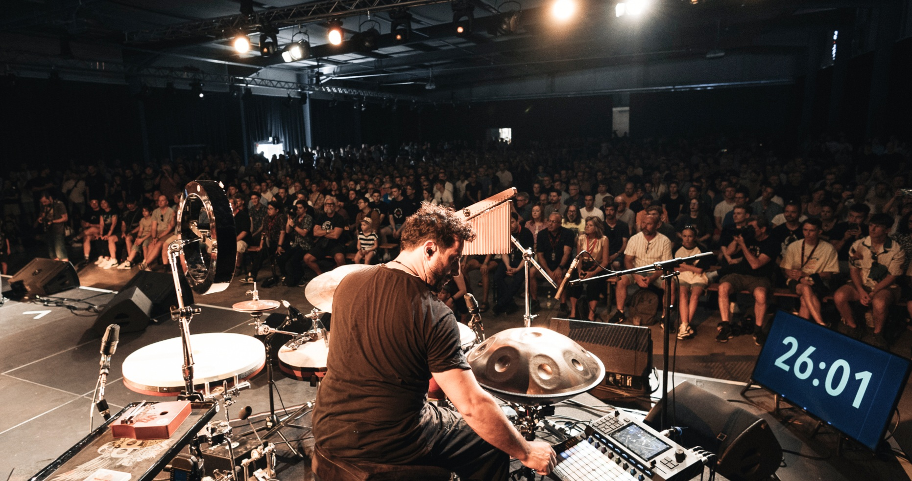

Ihr Browser unterstützt keine PDFs. Sie können die Datei stattdessen hier herunterladen.
Interview mit dem Mannheimer Morgen:
"Er ist ein wahrer Hexenmeister pochender, kochender, hochkomplexer Rhythmen: Trommelt diffizile 13/8-Takte, als wär’s ein Kinderspiel. Vermischt unterschiedlichste Schlagmuster zu schwindelerregend polymetrischen Kombinationen. Und entfesselt so eine geradezu magische Energie, die auf geheimnisvolle Art Klänge aus allen Teilen unserer Erde in sich zu bergen scheint...."

Preise:
Santino Scavelli beeindruckt sein Publikum durch sein hohes technisches Niveau und seine unkonventionelle Herangehensweise. Seine Fähigkeit, verschiedene kulturelle Einflüsse auf einen gemeinsamen Nenner zu reduzieren und in einem neuen Kontext wiederzugeben, ist zukunftsweisend und wegweisend für Schlagzeuger und Percussionisten der kommenden Generation. Santino hat zahlreiche Preise und Auszeichnungen erhalten, darunter den Framedrum Award 2018, den Youtube Early Career Award 2019 und den Meinl Outstanding Performance Award 2023.
Durch seine Zusammenarbeit mit internationalen Künstlern und seine Auftritte auf renommierten Bühnen hat Santino eine unvergleichliche Expertise entwickelt. Seine innovative Nutzung von Hybrid-Setups, die Schlagzeug und Percussion vereinen, ermöglicht es ihm, ein breites Spektrum an Klängen zu erzeugen und musikalische Grenzen zu überschreiten. Seine Erfahrungen als Studio- und Live-Musiker haben ihm ein tiefes Verständnis für die Anforderungen und Herausforderungen der Musikindustrie vermittelt.

Meilensteine
Santino Scavellis Vieseitigkeit geht über dsa Musikalische hinaus.
Als Composer und Producer, schrieb er 2015 die Musik für den Dokumentar
Film „Die neuen Deutschen“.
Mit seiner Band "Pulse Project, spielte Santino Scavelli u.a. in der ElbPhilarmonie mit dem "Chor zur Welt" und auf dem renomierten Jazzfestival "Openjazz". Seit 2018 leitet er die Produktion "Istanbul" .. " als Musikalischer leiter, die Über 50 mal am National Theater Mannheim schon gespielt hat.
Mit Anika Nilles ist er fest in Ihrer Band und haben und touren seit 2021 quer durch Europa u.a. Locations gespielt wie "Ronnie Scott" London, oder auch "Leverkusener Jazztage" .. " und 2023 wurde die Band Nevell Beim deutschen Jazzpreis in der Kathegorie Schlagzeug und Perkussion nominoert und haben als Headliner am Bei der Preisverleihung in Bremen gespielt.

Vision und Mission
Santino Scavellis Vision geht über die bloße Verschmelzung von Perkussion und Schlagzeug hinaus. Er strebt danach, eine neue Ära einzuleiten, in der die herkömmlichen Grenzen zwischen verschiedenen Schlaginstrumenten verschwinden.
In seiner Vorstellung soll jedes Perkussions- und Schlaginstrument als Quelle der Inspiration für einzigartige Klänge, innovative Techniken und mitreißende Grooves dienen.
Sein Ziel ist es, eine integrative und kreative Umgebung zu schaffen, in der Musiker nicht nur die traditionellen Spielweisen erlernen, sondern auch ermutigt werden, neue Wege zu erkunden und ihren eigenen Stil zu entwickeln. Durch die Verschmelzung von Perkussion und Schlagzeug möchte Santino die Vielfalt und die reiche Geschichte dieser Instrumente würdigen und gleichzeitig neue, aufregende Möglichkeiten für ihre Verwendung schaffen.
.